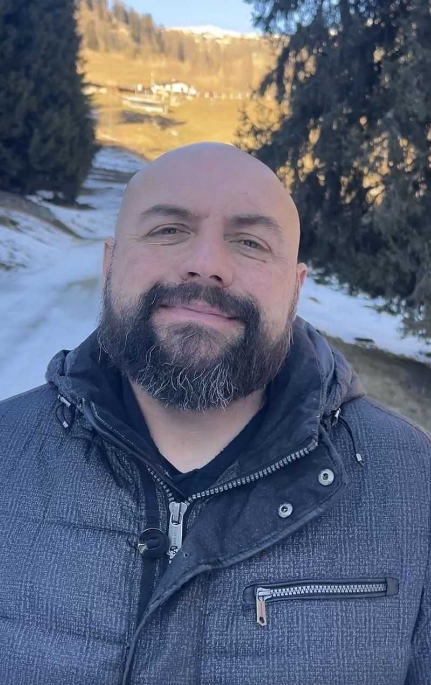

Presentazione
Chi sono.
Sono Cristian Bresadola. Naturopata iscritto al Registro ASPIN, riflessologo, fondatore di Punto Riflesso.
Lavoro con le persone partendo da una convinzione semplice: la struttura viene prima del sintomo. Prima di proporre una strategia, cerco di capire cosa c'è alla base — nel corpo, nella storia, nelle modalità ricorrenti.
Iscrizione
ASPIN · TN-1230-NA-P
Dal 2022
Fondatore Punto Riflesso
Collabora
UnserTirol24
